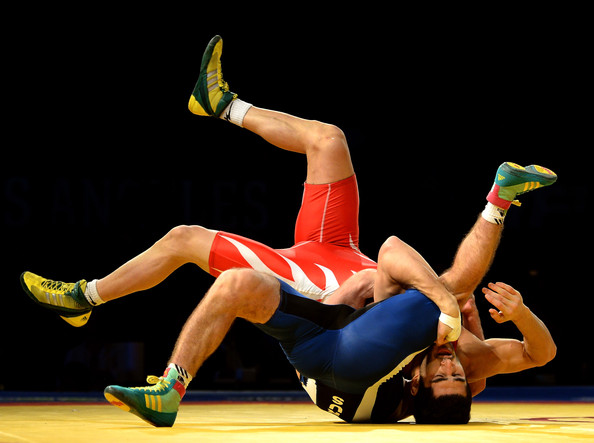

Wrestling has been an integral part of my life since high school. I have grown attatched to it, simply because it was the only sport that pushed me out of my comfort zone and made me feel engaged. Every second I spent wrestling was a moment to remember. Also it was one of the sports that wasn't cut for everyone and only certain people can make it through the try outs. The fact that I was able to stick around was one of my greatest achievements.
Wrestling
War Planes
Ever since I was a kid, I was really into airplanes. I would always compare different types of aircraft throughout history. The evolution of aviation technology has truely been remarkable. One of my favorite airplane in the history is the Zero also known as Mitsubishi A6M. Manufactured by the japanese imperial army during the second world war. It was known for its incredible turning angles as well as its agility. for a long time there were no competing aircraft on the sky to challenge that particular model. Until American made Mustang P-51D came to play. Which was also another airal show of force by the Americans. I can go on and on but you get the idea ....

Gaming
Last but not the least I love playing video games!!! I took an interest in playinig video games when I was just a kid. I fell in love with the idea of being able to control a make belive world or simulate something that is virtual. I would play those 8 bit graphics video games and think to my self how realistic they looked. Flash forward a decade later, I there are moments when the line between video games and reality gets blurred. Goes to show how far technology has come since the advent of virtual computing and graphical interface. If my past self got a glimpse of the current video games, he would surely lose his mind at the very least.